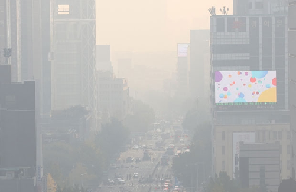

대기 오염이란?

공장의 매연, 자동차의 배기가스 등 인간활동으로 인한 대기상의
환경오염을 말합니다.
대기 오염으로 피해를 입는 동물들
대기 오염은 인간보다 동물에게 더 치명적입니다.
만약 당신이 미세먼지가 심한 날 반려견과 산책을 한다고 하면 인간은
1분에 평균 12~18회 호흡하는 반면
반려견은 1분당 평균 15~35회 호흡을 하며 인간보다 더 많은 공기를
들이마시며
산책할 때 킁킁거리며 냄새를 맡는 등 사람보다 훨씬 많이 대기오염의
피해를 받을 것입니다.
무분별한 개발로 인해 도시로 내려오는 고라니
고라니는 인간의 무분별한 개발로 인해 살 곳을 점점 잃어가며 도시와
도로 민가로 내려오고 있습니다.
고라니가 도로로 내려오며 도로로 이동함에 따라 로드킬 현상이
발생하는 등 고라니 뿐만 아니라 인간에게도 큰 피해로 작용하고
있습니다.
대기 오염을 해결하기 위한 우리들의 노력
1. 대중 교통 이용하기
지구온난화와 마찬가지로, 우리가 타는 자동차들은 대기오염물질들을
많이 내뿜고 있습니다.
그러기에 많은 사람들이 이용하며 대기오염물질을 적게 배출하는
대중교통을 이용하는 것이 대기오염을 해결하는 데에 도움이 될 수
있습니다.
2. 흡연 하지 않기
우리가 피는 담배는 우리의 건강을 해칠 뿐만 아니라, 대기오염물질을
많이 발생시켜 공기를 오염시킵니다.
그러기에 흡연을 줄임으로써 대기오염을 해결하는 데에 작게나마
도움이 될 수 있습니다.
우리들의 작은 노력이 어떤 동물들에게는 큰 도움이 될 수 있습니다!